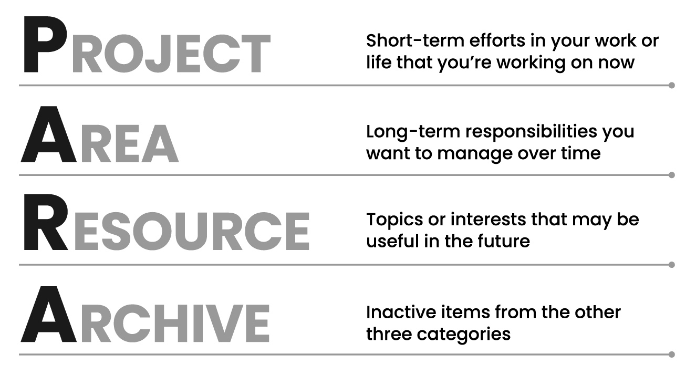
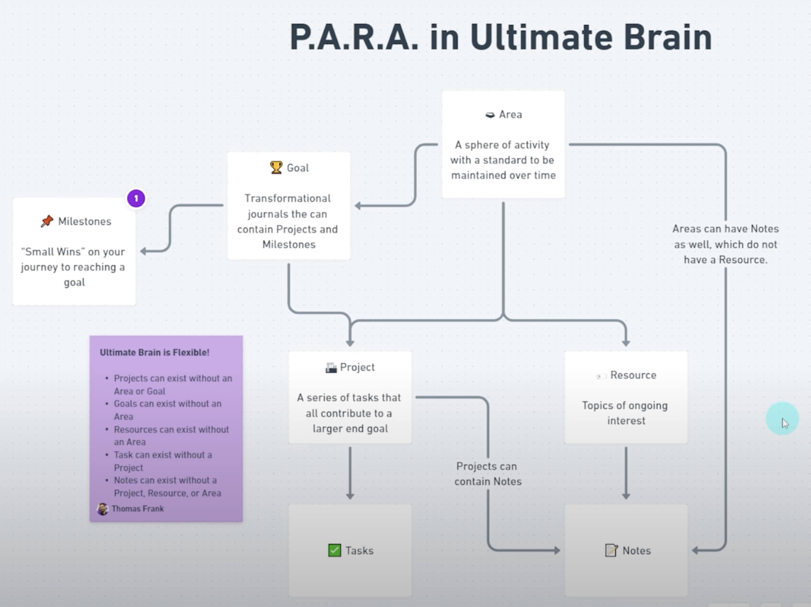

第二大脑｜如何打造All-in-One的信息和任务管理系统 - 理论篇
为什么需要All-in-One
我是笔记软件重度用户，先后尝试过或者重度使用过印象笔记、OneNote、Notion、LogSeq、Flomo、Mem.ai等等；也是任务管理软件重度用户，先后用过Microsoft TODO、Trello、嘀嗒清单等等。
我之所以对这块如此感兴趣，是因为我非常认同一个观点：人类的大脑擅长思考，但是不擅长记忆。因此我希望能够有“第二大脑”，帮我记录下重要的信息和任务，而我可以清空大脑，只专注于当下的事情。
但是使用的软件多了，就会有一个问题：当你想要寻找某个信息的时候，你可能不记得把它记录在哪里了；当任务记录在多个软件中时，你总有一种隐隐的忧虑，会不会因为忘记打开某个软件而错过重要的任务。
所以我一直想要找一个All-in-One的软件，记录我主要的信息和任务，把它打造成我的第二大脑。通过这个第二大脑，我可以持续记录重要信息，积累知识，并且不会遗漏重要任务。
在介绍具体的软件之前，我想先分享一下当前正在实践的信息和任务管理的理论。理论和工具是相辅相成的，有扎实的理论才能够把工具用好，用到精髓；有好的工具，才能帮助我们更好地把理论落地。
P.A.R.A理论：打造你的第二大脑
我是从去年5月开始接触并实践P.A.R.A方法的，到今天大概用了近一年了，感觉对我的帮助还是比较大的。
P.A.R.A是Tiago Forte提出的一套信息和任务管理的理论。Tiago Forte是个人生产效率专家，他的相关课程影响范围比较广。他希望能够通过这个方法打造个人的第二大脑，帮助个人在生活和工作中得到更好的发展。

Picture by Tiago Forte
P.A.R.A分别代表Project、Area、Resource、Archive，我们拆开讲一下它们的含义和用途。
Area
虽然P.A.R.A的第一个P是Project，但是需要先讲一下Area，因为它代表我们人生中想要持续精进的「领域」，比如身体健康、认知提升、亲密关系、技术能力等等。而Project和Resource都是为了能够支撑我们持续精进这些领域，所以Area是前提。
Area是需要「持续精进」的，不是短时间内就能够从你的注意力范围内移除的，比如身体健康可能是我们一辈子都需要关注的事情。其次，它是多元的，可能涉及工作生活的方方面面，否则我们的人生可能会失衡。
应该设定哪些Area，主要取决于每个人对自己的认知，需要持续地向内探索内心，想清楚自己想要什么、看重什么。比如有的人把「身体健康」放在很重要的位置，有充足的动力去提升自己的身体素质，而有的人并不是很在意这些，觉得正常吃饭睡觉就够了。
常见的Area可能包含了个人的生活和工作、以及人与人之间的关系等等各方面。作为参考，一种人生九宫格的划分方法涉及了身体健康、家庭生活、工作事业、财务理财、人际社群、学习成长、体验突破、休闲娱乐（九宫格中间是“自我”）。可以了解一下这几个方面分别意味着什么，自己之前是不是完全忽略了，有没有必要后续关注起来。
设定Area首先需要我们坦诚面对自己的内心，不要虚伪。因为Project和Resource都是为了支撑我们精进Area，如果Area不是我们真正关心的事情，我们就没有动力持续投入资源进行提升。因此不要因为别人都去做了就去做，不要觉得“成功人士”都是这么做的所以我也要这么做。
其次Area应该保持均衡、聚焦、有主次。均衡是指我们需要意识到，成功的人生绝不仅仅是某方面优秀就可以。有一些事业心特别重的人，会太忽视身体健康、家庭生活等等方面，导致人生越往后越难走，这个需要想清楚。同时我们应该聚焦一些Area，不能每个方面都想做得特别好。分清主次，有些Area做到80分90分，有些Area就做到60分吧。
Project
Project很好理解，就是一些需要我们采取行动的“项目”。在Tiago Forte的P.A.R.A的博客文章中，有一句话我做了特殊标记，“the ultimate system for organizing your life is one that is actionable”，这句话的关键是最后的“actionable”，也就是这个理论是强调行动的。
网络上有句比较烂俗的话，“知道很多道理，依然过不好这一生”。我的理解可能是因为很多人知道道理，但是没有很好的落地执行，没有制定Project。
如果我们把自己当做一个“产品”的话，你可以把上面提到的Area看做这个产品需要打磨的核心特性，而Project就是要打磨这些特性的项目。项目执行不力，特性也不可能越来越好。
举个例子，每到年底回顾的时候，我们很多人都会百感交集、痛定思痛，决定来年要提升理财能力、减肥锻炼身体、提升专业技能等等。然后这些感悟都只停留在“想法”的阶段，它们最多算是我们想要提升的Area，但很少有人针对性的制定出Project，让这些想法落地。
Project应该具备哪些特性，如何设定Project，我觉得对于科技行业的人来说并不是难事。设定一个SMART目标，然后做好任务的大致拆解，剩下得主要就靠自律了。
Resource
Resource是加深对Area认知、支撑Project执行的资源，这些资源可以是互联网上优秀的文章视频，也可以是我们自己思考总结的笔记。
比如我们设定了一个「专业技能」的Area，为了精进这个Area，我们可能会根据当前的工作内容，设定了一个「Java语言」的Resource模块，然后我们会把网络上能够帮助我们提升Java语言的博客教程，都归纳到这个Resource下面。一般我们可能在工作中就有可以提升专业技能的Project，但如果是学生的话，就可以自己设定一个练手的Project，通过开发一个Java语言的小软件，提升自己的专业技能。
这里可以对比一下Area和Resource的差异，「Java语言」不太适合作为Area，因为它并不是从人生长度上需要持续精进的领域。可能慢慢这个语言没落了，可能我们换工作不再需要关注它了。但是如果我们一直从事软件研发的工作，「专业技能」就是需要持续提升的领域。
我是网络资源收藏爱好者，看到好的文章视频，都忍不住归纳到自己的Resource列表中。后来发现只收藏的话效果还是差一些，还是要定期回顾、思考、总结，然后输出一些自己的文字作为Resource。这种消化吸收后的知识，可以更好的支撑自己的Area和Project。
有一点需要注意，和Area类似，Resource也要保持聚焦，最好以可以支撑Project。因为前面提到，P.A.R.A还是以「行动」为导向的，如果我们不加取舍地收集了一堆资料，归纳到泛泛的Resource下面，不仅可能没有支撑作用，还可能会给我们造成信息干扰。
Archive
Archive就是要把不再感兴趣的Resource、完成的Project等进行归档，仅留作后续检索使用。之所以归档，也是为了保持聚焦，在P.A.R.A中只保留当前最需要关注的信息，避免信息过载。
Area也可以归档，但是Area一般变动不是很频繁。如果频繁归档的话，可能设定Area有问题。
通过定期盘点梳理Project和Resouce，把信息进行归档，和收拾房间、打扫卫生类似。整洁条理的环境，可以帮助我们保持愉悦的心情，专注在最重要的事情上面。
内在关系

Picture by Thomas Frank
上图是另外一位分享P.A.R.A的Youtube博主绘制的示意图，他添加了几个元素，包括和Project相关的Goal/Milestones/Tasks，以及和Resource相关的Notes。核心的内在关系和我们上面提到的基本是一致的，主要是Project和Resource对于Area的支撑关系，一个是提升Area的行动，一个是提升Area的资源（或者说一个是实践支撑，一个是理论支撑）。
Inbox
除了P.A.R.A四个方面，我在综合了其他文章的建议后，又加入了Inbox这个概念。
Inbox就如同邮箱中的收件箱，它是信息和任务进入整个系统的第一站。Inbox主要是为了快速记录，因为有时候我们真的没有时间细想它们应该归纳到哪里，如果不先记录下来，可能很快就忘记了。
我看到想要收藏的文章时，首先通过裁剪工具把文章加入到收件箱中，然后用零碎时间慢慢读完，并把文中的亮点提取到笔记中。我一般不会像印象笔记一样裁剪全文，因为这种方式信息太多，反而是一种干扰。记录亮点文字就足够了，如果再能加上自己的思考总结那就更好了。然后把文章归纳到某个Resouce下，这篇文章就算处理完了。
任务也是类似的方法，对于随手记录的Task，先录入Inbox，然后有时间的时候就梳理评估一下，这个Task到底要不要做、什么时候做、是某个Project的Task还是临时Task。如果是在拆解Project，那就直接把Task记录在对应的Project下即可。
需要给自己培养一个习惯，每天某个时间点，处理一下Inbox中的信息和任务。如果Inbox中的信息长时间不处理，就和邮箱中的邮件积压一样，可能会导致错过重要信息和任务，也会让你焦虑。
我一般早上过一下Inbox中的Task，简单处理后的Task会在系统的某个Dashboard中集中显示，包括今天要执行的Task、Task所属的Project、优先级等等。然后午饭后或晚饭后等精力较弱的时候，过一下Inbox中的文章等。
最后
实践下来我的一些反思：
1. 聚焦：上面反复提到的，Area/Project/Resource都要做减法、做取舍。我总是不自觉的列的东西越来越多，导致精力兼顾不过来，重要的Area进展缓慢。
2. 回顾：信息要记录，也一定要定期回顾。回顾的过程一是要梳理信息，把不重要的信息及时归档；二是要持续思考总结，否则记录的信息就真的是“进入我的收藏夹吃灰”了。我一般周末找个时间回顾一下本周还没处理完的文章等，也会做一些思考总结。每个季度末尾也会督促自己做季度复盘。
基于这个理论，其实在很多软件中都可以进行实践。比如有的人就直接使用Google Drive的文件夹方式实践这个方法。在下一篇文章我分享一下自己的实践方法。
The PARA Method: The Simple System for Organizing Your Digital Life in Seconds
The ULTIMATE Second Brain Setup in Notion